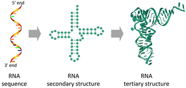
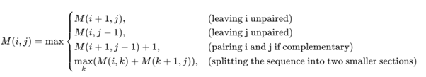
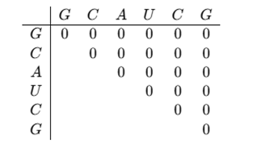
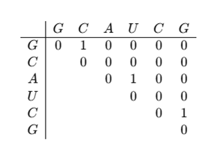
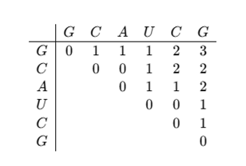

Exploring RNA Secondary Structure Prediction using the Nussinov Algorithm
Introduction
The central dogma of molecular biology states that the genetic information of an organism is transferred from Deoxyribonucleic Acid (DNA) to Ribonucleic Acid (RNA) and then to Proteins which was initially believed as primary function of RNA. However, extensive molecular research on genetic material has revealed that RNA plays a diverse range of roles, particularly through non-coding RNAs (ncRNAs). In 1978, Stark et al. discovered one of the first examples of a small RNA involved in the regulation of gene expression. This RNA, later classified as a small nuclear RNA (snRNA), was found to play a crucial role in RNA splicing. Specifically, snRNAs are components of the spliceosome, the cellular machinery responsible for processing precursor mRNA (pre-mRNA) into mature mRNA by removing introns. This discovery was foundational in understanding the role of non-coding RNAs in post-transcriptional gene regulation and RNA processing leading to the identification of various functional ncRNAs that regulate transcription, translation, RNA modification, and gene expression. These regulatory ncRNAs are critical for biological processes such as immune response, neuronal differentiation, and muscle development.
RNA structure, Folding and Stability
Ribonucleic acid (RNA) is a single-stranded biomolecule which can attain some unique shapes. Understanding RNA structure is fundamental for exploring its biological roles and designing RNA-based therapeutic strategies. Basically, RNA has three structures which are primary, secondary and tertiary (Fig.1) . RNA function is largely determined not only by its nucleotide sequence but also by its secondary and tertiary structure, which allows it to interact with DNA, proteins, lipids, and other biomolecules.
Primary Structure of RNA:
The primary structure of RNA refers to the linear sequence of nucleotides, which are composed of four nitrogenous bases: adenine (A), uracil (U), guanine (G), and cytosine (C). These bases are linked by a sugar-phosphate backbone, where the sugar is ribose, distinguishing RNA from DNA, which contains deoxyribose. The sequence of nucleotides in RNA is critical for encoding genetic information and serves as the template for further structural folding. The primary structure determines the potential for base-pairing interactions, which influence higher-order structures and RNA function.
Secondary Structure of RNA:
The secondary structure of RNA arises from intramolecular base-pairing, where complementary nucleotides form hydrogen bonds. The most common canonical base pairs are A-U and G-C, while non-canonical G-U wobble pairs are also frequently observed. RNA molecules fold into characteristic secondary structural elements, including Hairpin loops (formed by self-complementary sequences), Stem-loops (crucial for structural stability and function), Bulges and internal loops (regions with unpaired nucleotides affecting flexibility), Pseudoknots (complex interactions involving base-pairing between non-contiguous regions). These structures play vital roles in RNA stability, translation, and enzymatic activity. Computational algorithms like the Nussinov algorithm and Zuker’s algorithm predict RNA secondary structure based on base-pairing rules and energy minimization principles.
Tertiary Structure of RNA:
The tertiary structure of RNA refers to its three-dimensional (3D) conformation, formed through long-range interactions between secondary structure elements. The tertiary structure is stabilized by base stacking interactions (π-π interactions between aromatic rings of nucleotides), hydrogen bonding and metal ion coordination (essential for structural integrity), non-canonical base pairs and coaxial stacking (stabilizing the folded RNA). Tertiary structures are crucial for RNA function, as seen in ribozymes (catalytic RNAs), riboswitches, transfer RNAs (tRNAs), and ribosomal RNAs (rRNAs).
Fig.1: Representation of RNA Structures- Primary, secondary and Tertiary
Adapted from: Zhao, Q., Zhao, Z., Fan, X., Yuan, Z., Mao, Q., & Yao, Y. (2021). Review of machine learning methods for RNA secondary structure prediction. PLoS computational biology, 17(8), e1009291.
RNA Folding and Stability: The Thermodynamics of RNA
RNA folding is a fundamental process that dictates its structural conformation and functional role in biological systems. The formation of RNA secondary structures is governed by thermodynamic stability and base-pairing rules, which determine how RNA strands fold into the most energetically favorable configurations. RNA folding follows the principles of canonical Watson-Crick base pairing (A-U and G-C) and non-canonical interactions, such as G-U wobble pairs, which contribute to structural stability and functional specificity. These interactions, along with loop formations, bulges, and pseudoknots, allow RNA to adopt a compact and functionally relevant conformation. The stability of RNA structures is influenced by several factors, including hydrogen bonding, base stacking interactions, electrostatic forces, and the presence of divalent metal ions (e.g., Mg²⁺), which help neutralize the negative charge of the phosphate backbone and stabilize complex tertiary folds.
The thermodynamics of RNA folding revolves around the principle that RNA molecules adopt secondary and tertiary structures that minimize their Gibbs free energy (ΔG). The most stable RNA conformation is typically the one that maximizes favourable base-pairing interactions while minimizing steric hindrance, electrostatic repulsion, and unfavourable entropic effects. RNA folding occurs through a dynamic process, where local base-pairing interactions are rapidly formed and broken before settling into the lowest energy state. Computational models, such as the nearest-neighbor thermodynamic model, use experimentally derived thermodynamic parameters to predict RNA secondary structure based on free energy minimization. Advanced algorithms, including Zuker’s Mfold, ViennaRNA, and Nussinov’s algorithm, utilize these thermodynamic principles to predict RNA folding patterns, which are critical for understanding RNA function, RNA-protein interactions, and designing RNA-based therapeutics.
Predicting Secondary Structure of RNA using the Nussinov Algorithm
The Nussinov algorithm is a computer-based method that helps to predict how an RNA strand folds, connecting its simple sequence of bases to the complex 3D functional structure. Algorithm uses dynamic programming to identify the most stable secondary structure of an RNA sequence by maximizing the number of base pairs. It constructs an n × n matrix, where each entry represents the best possible folding (or base-pairing) of a subsequence. Through a recursive approach, the algorithm evaluates different folding possibilities, selecting those that yield the most base-pair matches while ensuring structural feasibility (i.e., no overlap of base-pairing constraints). The resulting traceback step extracts the predicted base-pairing interactions, which can be visualized in a 2D representation of the RNA secondary structure (e.g., hairpins, loops, and stems). The algorithm step is as follows:
Step 1: Initialization
The Nussinov algorithm starts by creating a two-dimensional matrix M(i, j) for an RNA sequence of length n. This matrix helps store information about possible base pairings. Each cell in the matrix corresponds to a subsequence of the RNA, where i and j represent the positions of nucleotides in the sequence. Initially, all values in the matrix are set to zero. The goal is to fill this matrix by determining the best possible base pair combinations that result in a stable RNA secondary structure.
Step 2: Recurrence Relation
The algorithm then uses a recurrence relation to determine how many base pairs can be formed within a given subsequence. It considers different possibilities like leaving a nucleotide unpaired (i.e.skipping a position in the sequence), pairing nucleotide i with nucleotide j, if they are complementary (A-U, G-C, or G-U),Splitting the sequence into smaller subproblems and solving them recursively to maximize the total number of base pairs.
Mathematically, the recurrence relation is:
This step ensures that the structure formed is as stable as possible, based on the number of base pairs.
Step 3: Matrix Filling
Once the recurrence relation is defined, the matrix is filled systematically. The algorithm starts by solving for small subsequence (small values of j−i) and gradually builds up to the full-length sequence. Each cell in the matrix stores the maximum number of base pairs that can be formed for the corresponding subsequence. By iterating through increasing sequence lengths, the algorithm eventually computes the best possible structure for the entire RNA sequence.
Step 4: Traceback
After the matrix is filled, the optimal secondary structure is determined using backtracking. Starting from the highest-scoring value in the matrix, the algorithm traces back the choices that led to this score, identifying which nucleotides are paired and which remain unpaired. This step reconstructs the secondary structure, often represented using dot-bracket notation (e.g., "." for unpaired bases and "()" for paired bases).
Step 5: Complexity Analysis
The Nussinov algorithm runs in O(n2) time because it fills an n×n matrix using nested loops. It also requires O(n2) space to store the matrix, making it suitable for short to medium-length RNA sequences.
Example of Nussinov Algorithm for RNA Secondary Structure Prediction
Take a simple RNA Sequence:
S = G C A U C G
(Index positions: 1 2 3 4 5 6)
Applying the Nussinov algorithm step by step to predict its secondary structure.
1. Initialization:
Create an n×n matrix, where n is the length of the RNA sequence (in this case, 6). The matrix represents all possible subsequences of the RNA, and initially, all values are set to 0. The matrix layout looks like this:
Since an RNA base cannot pair with itself, the diagonal of the matrix remains 0.
2. Filling the Matrix Using Recurrence Relation:
Apply the recurrence relation step by step to determine the maximum number of base pairs that can be formed. Fill the matrix starting with pairs of length 2, then 3, and so on.
Filling for subsequence of length 2
(G, C) at (1,2): G and C can pair → Score = 1
(C, A) at (2,3): C and A cannot pair → Score = 0
(A, U) at (3,4): A and U can pair → Score = 1
(U, C) at (4,5): U and C cannot pair → Score = 0
(C, G) at (5,6): C and G can pair → Score = 1
The updated matrix will be:
3. Filling for subsequences of length 3, 4, and more:
Continuously apply the recurrence relation by considering longer subsequence.
For subsequence G-C-A (1-3): G and A cannot pair, so we take the maximum from previous steps → Score = 1
For C-A-U (2-4): A and U can pair, but no additional pairings possible → Score = 1
For A-U-C (3-5): A-U pairs (1), but no more pairings → Score = 1
For U-C-G (4-6): C and G can pair, so Score = 1
The Final Matrix will be:
The maximum number of base pairs is 3, found in M (1,6).
Traceback to Find the Optimal Secondary Structure: Reconstruct the secondary structure by trace backing from M (1,6).
G (1) pairs with C (5) → (G, C)
A (3) pairs with U (4) → (A, U)
C (2) remains unpaired
Thus, the Final predicted structure (in dot-bracket notation): (.(()).) Means
"." means unpaired
"()" means paired bases